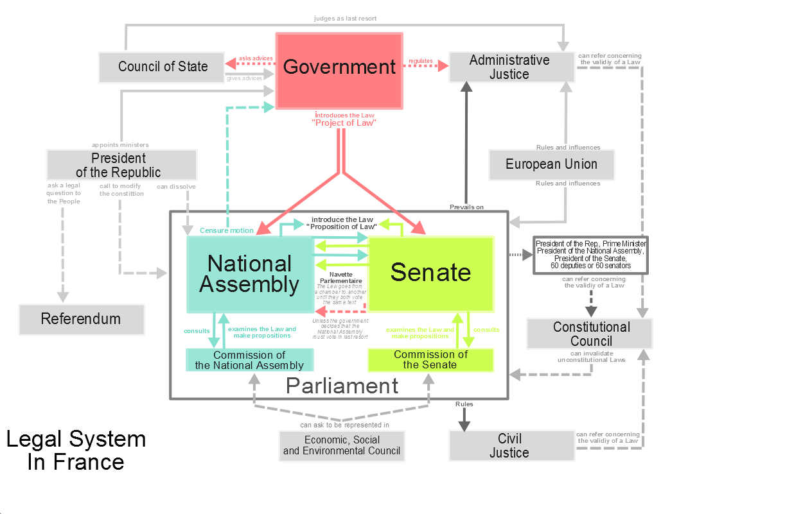
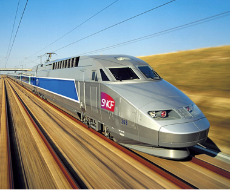
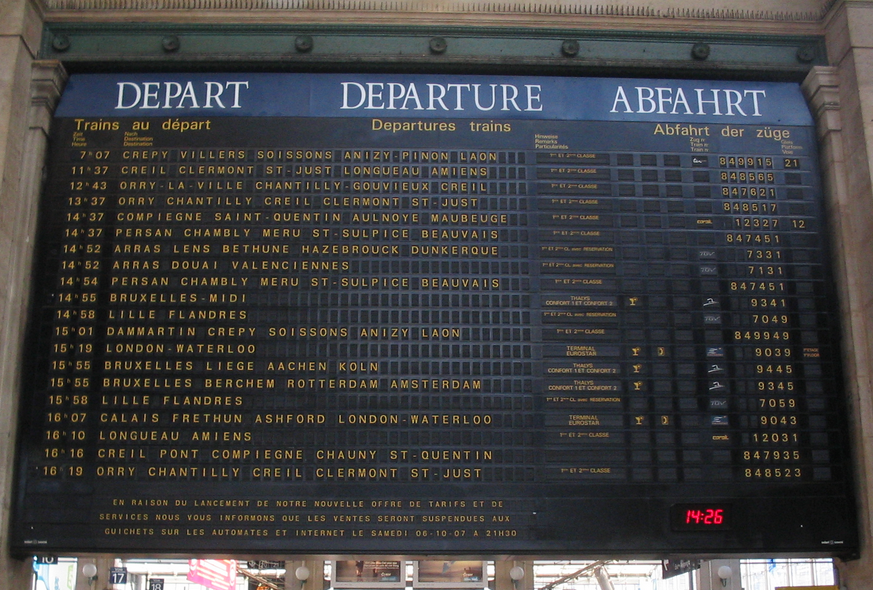
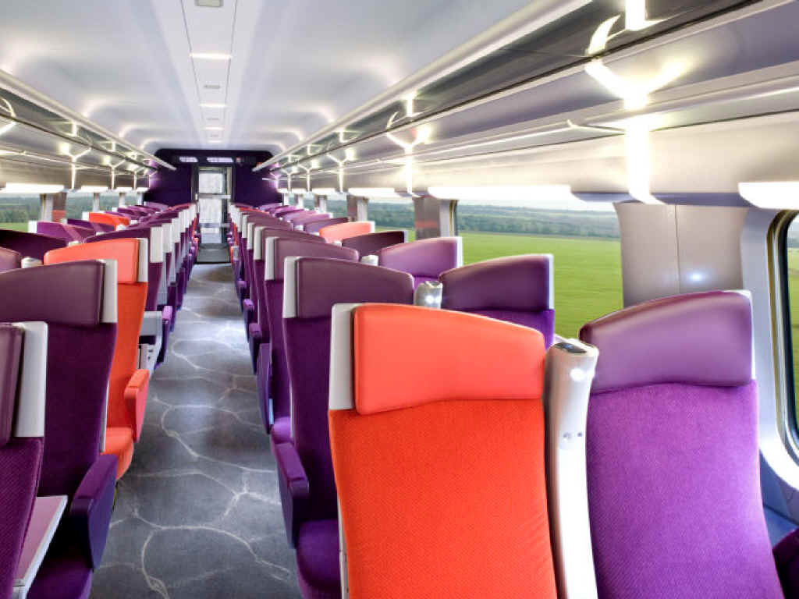

Basic Facts
leader
President François Hollande (also co-prince of Andorra)
population:
66.03 million (as of 2013)
land area:
247,367 mi² (640,679 km²)
capital:
Paris (pop: 2.2 million)
oldest building in France
the Cairn of Barnenez, Finistère, Brittany
bordering countries
Spain, Andorra, Italy, Switzerland, Germany, Luxembourg, Belgium
Regions:
Alsace
Aquitaine
Auvergne
Brittany
Burgundy
Centre-Val de Loire
Champagne-Ardenne
Franche-Comté
Île-de-France
Languedoc-Roussillon
Limousin
Lorraine
Lower Normandy
Midi-Pyrénées
Nord-Pas-de-Calais
Pays de la Loire
Picardy
Poitou-Charentes
Provence-Alpes-Côte d'Azur
Rhône-Alpes
Upper Normandy
Overseas Regions
French Guiana
Guadeloupe
Martinique
Mayotte
Reunion
Territory:
Corsica
National Anthem:
La Marseillaise
time zone:
Central European Time Zone (UTC+1)
6 hours ahead of New York, 9 hours ahead of California
Independence Day
July 14, Bastille Day, when the French people stormed the Bastille Prison in 1789 and began the French Revolution.
Government
Leader:
President François Hollande, since 2012
{kind=link}
Prime Minister:
Manuel Valls
{kind=link}
Other Ministers:
Minister of Foreign Affairs: Laurent Fabius
Ecology Minister: Ségolène Royal
Education Minister: Najat Vallaud Belkacem
Justice Minister: Christiane Taubira
Finance Minister: Michel Sapin
Defense Minister: Jean-Yves Le Drian
Social Affaires Minister: Marisol Touraine (also Minister of Health and Women's Rights)
{kind=link}
France had an absolute monarchy from the Middle Ages until 1789, when the people had a revolution and overthrew the monarchy, beheaded almost all the aristocracy, and installed the first republic based on the ideas Liberté, Égalité, Fraternité, or Liberty, Equality, and Brotherhood. Actually, the same philosophy and even some of the same philosophers inspired both the French and American Revolutions.
{kind=link}
However, unlike the American Revolution, which led to a constitution that hasn't been drastically changed since its ratification in 1788, France has had 5 different constitutions since its revolution, to accompany the 5 republics they've had since that time. (There were also a couple imperial periods thrown in there, hence Napolean, but they don't like to think of that quite so much.)
Transportation
Trains can be confusing for people who don't use them in everyday life. Aka, Americans. And the French train system, the SNCF, or the Société Nationale des Chemins de Fer (the French National Railroad Company), can be pretty strict, even if you're an American who is completely new to everything train.
There are two kinds of trains in France, the TGV, Train Grande Vitesse, and the TER, Transport Express Régional (Regional Express). The TGVs are very fast, getting up to 200 miles/hour (322 km/h), and make few, if any, stops between the origin and terminus which, more often than not, is Paris. The downside is that they can be much more expensive. TERs are the cheaper option, but they go more slowly and stop frequently.
For an example of the time difference between these two, consider the route between Paris and Lyon, a distance of 289 miles (465km): A TGV will get you there in about 2 hours and cost around 100€ while a TER, the intercities train, will take around 5 hours and cost 50-60€. I should note that train prices vary based on time of day, time of the year, how far ahead you reserve your place, your age, and whether or not you have any kind of membership card.
Trains tend to be a much less stressful way of traveling, if you know what you're doing. To begin, there's no train station TSA, so you can arrive at the station even 2 minutes before your train leaves and still catch it. Probably. Depending on the size of the station.
Maybe don't try that in Paris.
Anyway, the process once you've arrived at the station can scare people who don't speak French. Here are some basic steps, assuming you've already gotten your ticket.
{kind=link}
Once you've found your train on the list, scan right to the column that says "Voie", or Platform, and it'll tell you at which platform your train will arrive. Some train stations have platform numbers, and some have letters, but it all means the same thing. Then follow the signs that direct you to the platform number/letter.
The voie is usually only shown 10-20 minutes before the train arrives, maybe even less if it's not a usual terminus town (ie, not Paris), so don't panic if you've arrived an hour beforehand and your voie isn't shown yet. Or just don't arrive an hour beforehand.
{kind=link}
Follow the signs that direct you to the platform number/letter. Then you gotta find your voiture, or car. Your ticket wlll have the number of your car on the right. If you don't see "voiture" and "place" (seat number) on your ticket, it should say which class you're in, and that your train is a TER where they're much less stringent on seating. If you're in a TER, just go to any of the cars that have your class number written on the window and try to sit in a seat that hasn't been reserved. If a seat has been reserved, it'll be written above the seat the last number of the traveller and at which stop they're getting on the train.
Anyway, for a TGV: find the number of your car on the ticket, and then walk along the platform until you see that number written on the window of the train car. This process actually varies a lot with the station and the particular train. Some stations are great and have a display of how the train will be laid out on the platform, then you can go stand by where your car will arrive. This is more common at stations that aren't terminus stations because they want to get passengers on the train more quickly when it's just passing through.
Something else that happens occasionally: the order of the cars isn't always what you would call logical. I've seen trains where the order of the cars is [1] [2] [3] [4] [5] [6] [food car] [12] [11] [10] [9] [8] [7]. So if you worry about your counting skills or the mystery of the disappearing train car, it's not you. It's them.
For non-terminus stations, if the train isn't quite there, you can chill until it arrives. Some very high-tech stations have display monitors with the setup of the arriving train, and then you can stand by where your car will be, but if not, don't panic. You'll make it. The car numbers are marked in the windows, and you can ask the people in caps and gray and purple suits "où est la voiture [number]," if you have trouble.
Once you're in the car, look for your seat number, which will either be on the side of the seat or on the ceiling. If you have big luggage, there are usually spots at the ends of the car, sometimes even in the middle, if the train is really fancy. There's usually overhead space, which you should use for smaller baggage, but try do try to not be an asshole and take up all the space with your stuff.
Did you know...?
France is the most visited country in the world, with 83 million tourists a year (2012 stat)
France once controlled land on 5 continents (not Australia or Antarctica)
Paris was originally a Roman city called "Lutetia"
There's only one stop sign in all of Paris
There are towns in France called "Pussy" and "Condom"
Louis XIX was France's king for only 20 minutes, after which he abdictated to Henry V
France was the first country to use the license plate
Potatoes were illegal in France between 1748 and 1772
Nearly 96% of French high schools have condom vending machines.
King John I was proclaimed king 5 months before he was born, and then only lived for 5 days
From 1814 to 1830, the flag of the Kingdom of France was plain white
There are more French-speaking people in Africa than in France
10 billion baguettes are baked every year in France
The French government originally wanted to tear the Eiffel Tower after the fair it was built for in 1889, but it was so popular, they changed their minds
France has won the most Nobel Prizes for Literature than any other country in the world and the second most in math.
The croissant was actually invented in Austria
The guillotine was last used in 1977.
According to the 2003 Durex Global Sex Study revealed that the French have the most sex.
French women have the highest life expectancy in all of the EU
France was the first country to legalize same-sex sexual actiity in 1791
Charles de Gaulle, French president after WWII, survived 32 assassination attempts and which landed him a spot in the Guinness Book of World Records for the most assassination attemps survived.
Wine has been produced in France since Roman times
Language Basics
A few notes about the French language:
when a word ends with a consonant, it's not pronounced unless there's an e after it. Speaking generally, of course. For example,"je pars," I leave, is pronounced "zheu par," but if you take a different mode of that, "je parte," you pronounce it "zheu part."
yes, the r's sound a bit like hacking and gagging but still try to not hit them too hard. and really don't roll them, that just gets confusing.
there's a formal and informal way to address people. the general rule is that if someone is older and/or of a higher standing than you (ie, a boss), use the formal version. otherwise stick with the informal. just to make it trickier, the formal way of addressing people is also the way of addressing multiple people. For example, "vous mangez," can either mean "you eat, Mr. President" or "you guys eat, you 10 homeless cats."
French is one of those languages with masculine/feminine nouns, so when you're writing, you really gotta remember where to add silent e's at the end of words and which form of an adjective to use. When you're speaking, generally an adjective that corresponds to a feminine noun will have a harder consonant at the end of the word. For example, "He is strong," is "il est fort," or "eel ay for," and "she is strong" is "elle est forte," or "el ay fort".
In that same vein, don't use the female form of animals that are usually masculine. "Cat", or "chat" ("shah") is masculine in French, as is pig, "cochon" ("ko-shoh(n)"), and dog, "chien", ("she-eh(n)"). I know it's tempting to call to a cute little female kitty a "chatte," but this actually ends up translating to "pussy." "Chienne" is "bitch," and "cochonne" is "slut." Just to name a few. It's like the French designed their language to make enthusiastic anglophones sound vulgar.
There are lots of ways to greet people. one thing my textbooks never mentioned: yes, "bonjour" is used to say "hello," but it literally translates to "good day," and so you only use that during the day. when it gets to evening and later, you say "bonsoir," which translates to "good evening."
you gotta do math to count. the french got lazy halfway through inventing numbers. that or they'd had too much wine, and didn't feel like coming up with new numbers after 60. so 70 translates to sixty-ten, 80 is four-twenty, and 90 is four-twenty-ten. i've been told that in belgium they've come up with septante for 70 and nonante for 90, but i've never actually heard it, so don't quote me on that. and now go add "calculator" to your packing list.
Useful Vocabulary
hello
bonjour (normal, during the day)
bonsoir (for evening or later)
salut (informal, all times)
goodbye
au revoir (formal)
salut (less formal)
ciao (informal. actually Italian, but people everywhere use it.)
yes
oui
no
non
please
s'il vous plaît (formal)
s'il te plaît (informal)
thank you
merci (normal)
je vous remercie (formal)
je te remercie (less formal)
you're welcome
de rien (normal)
je vous en prie (formal)
je t'en prie (less formal)
excuse me
pardon (normal)
excusez-moi (formal)
excuse-moi (less formal)
I'm sorry
désolé
good morning
bonjour
good night
bonne nuit
have a good day
bonne journée (for when you part ways during the day)
have a good night
bonne soirée (for when you part ways at night)
nice to meet you
enchanté
how are you?
comment allez-vous? (formal)
comment vas-tu? (less formal
ça va? (normal)
do you speak english?
parlez-vous anglais?/est-ce que vous parlez anglais? (formal)
parles-tu anglais?/est-ce que tu parles anglais?
I don't speak (language)
je ne parle pas (language-français)
Where is...
où est/où se trouve...
the bathroom
les toilettes (in public)
la toilette/la salle de bain (in someone's house)
the train station
la gare
the bus station
la gare routière
the airport
l'aeroport
downtown/city center
centre ville
the eiffel tower
la tour eiffel
notre dame cathedral
la cathédrale notre dame
the catacombs
les catacombes
republic square
la place de la république
where are you from
d'où venez-vous? (formal)
d'où viens-tu? (informal)
I am from...
Je viens de
the united states
les états-unis
california
la californie
I would like...
je voudrais
beer
une bière
wine
du vin
tea
un thé
coffee
un café
can i have the check, please?
l'addition, s'il vous plaît
leave me alone
laisse-moi
fuck off
va-t-en/va te faire foutre
how do you say (english word)
comment dit-on (english word)
what does (french word) mean?
qu'est-ce que (french word) veut dire?
i'm tired
je suis fatigué
i'm hungry
j'ai faim
i'm thirsty
j'ai soif
i'm hot
j'ai chaud
i'm cold
j'ai froid
i'm looking for
je cherche
numbers
les chiffres
1
un
2
deux
3
trois
4
quatre
5
cinq
6
six
7
sept
8
huit
9
neuf
10
dix
20
vingt
30
trente
40
quarante
50
cinquante
60
soixante
70
soixante-dix
80
quatre-vingt
90
quatre-vingt-dix
100
cent